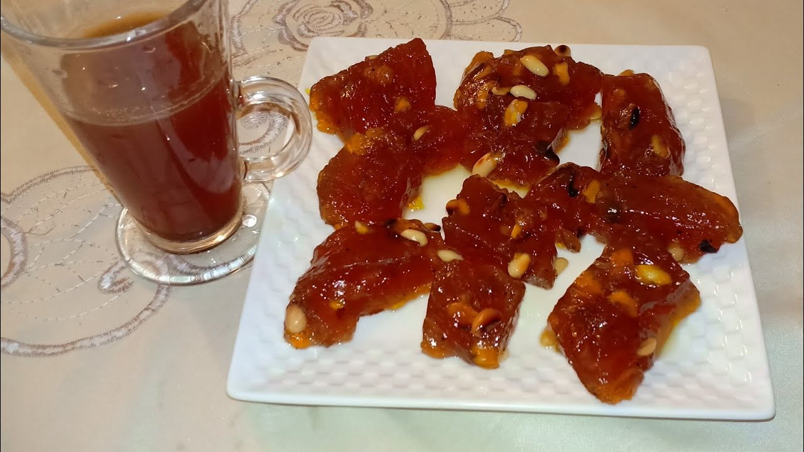

Xalwa

Somali Halwa also known as: Xalwad, Halwo or Halwad is a popular sweet, it is made of sugar, cornstarch, oil and for the spices nutmeg and cardamom are used. There is one with peanut added at the end. It is usually served with cup of Somali spiced tea.
Ingredients
- 4 cups of water
- 2 cups/1 lb granulated sugar
- 2 cups/1 lb light brown sugar
- 1 cup cornstarch
- 1 cup ghee/oil
- 1 teaspoon ground cloves
- 2 teaspoon of ground cardamom
- Pinch saffron powder
Steps
- Bring the sugar and the water to boil.
- Mix cornstarch, saffron and half of cup water, allow it to dissolve.
- Add the cornstarch to the mixture.
- Cook the mixture over medium heat while stirring.
- As the mixture turns thick, start adding oil. This might take about 30 minutes.
- Continue adding oil when it sticks to the bottom of the pan.
- Keep stirring until the mixture gets separated.
- When it starts to leave the sides of the pan add cardamom and cloves.
- Put the halwa on a baking sheet.
- Let it cool.
- Cut and serve.